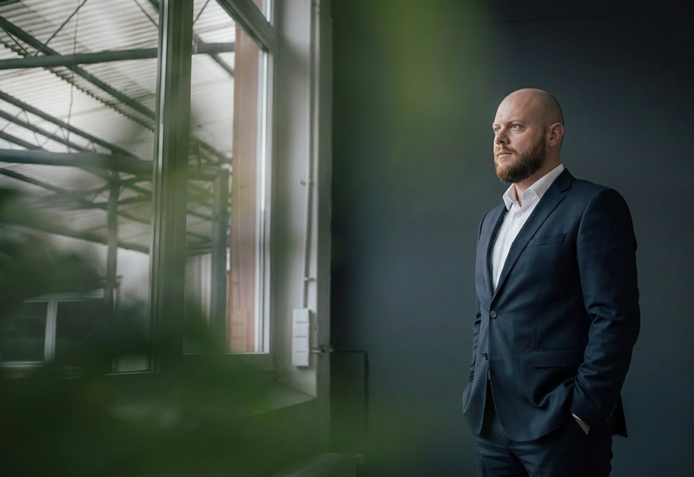
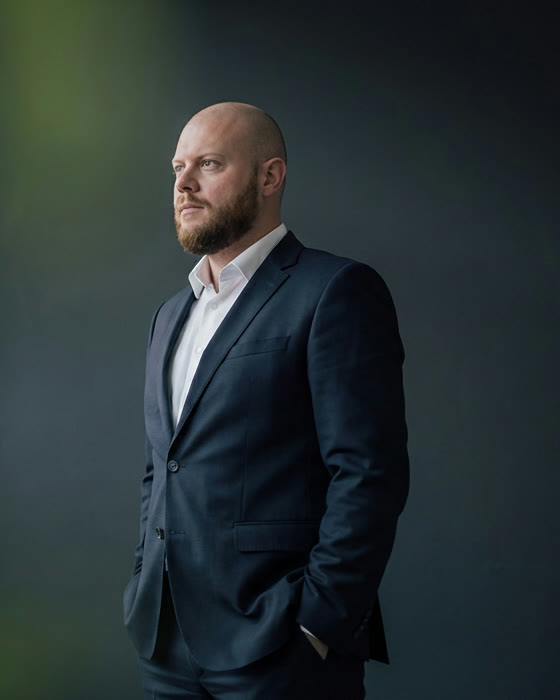

01
Строительные споры
Оплата и объём выполненных работ, качество, односторонние акты, дополнительные работы, неустойки, возврат аванса. Строительно-технические экспертизы. Представляю и заказчиков, и подрядчиков.

Ко мне приходят, когда нужна реальная помощь
и ясный план. Разбираюсь в сути, выстраиваю
стратегию и довожу дело до решения.
Оплата и объём выполненных работ, качество, односторонние акты, дополнительные работы, неустойки, возврат аванса. Строительно-технические экспертизы. Представляю и заказчиков, и подрядчиков.
Защита руководителей и участников от субсидиарной ответственности и взыскания убытков, оспаривание сделок, включение требований в реестр, сопровождение кредиторов и должников в процедурах.
Тупики в ООО, истребование документов у общества, оспаривание решений и сделок, защита от поддельных ликвидаций и смены директоров, сопровождение участников при проверках по заявлениям оппонентов.
Споры по займам и залогам, недвижимость и сервитуты, споры с сетевыми и газораспределительными организациями, поставка и перевозка, наследственные дела, медиация и третейское разбирательство.
По этому направлению кейсы пока не опубликованы.
Результаты прошлых дел не являются обещанием результата по другим делам: исход каждого спора зависит от его обстоятельств и доказательств. Описания приведены с согласия доверителей или по открытым судебным актам.
Напишите в Telegram: коротко о ситуации и какие документы есть. Отвечу и предложу время.
Разбираем документы и факты. Говорю прямо, какие есть перспективы и риски — в том числе если дело лучше не начинать.
Беру паузу на анализ, затем присылаю план: стратегия, этапы, сроки и стоимость.
Подписываем соглашение об оказании юридической помощи, оформляем доверенность. Приезжать не обязательно.
Претензии, иск, обеспечительные меры, экспертизы, заседания — включая онлайн. Каждый шаг контролирую лично.
Регулярно сообщаю о ходе дела. После решения — исполнительный лист, банк, приставы.
Ведение дела оплачивается по соглашению: аванс за вход в дело и гонорар, часть которого может быть привязана к достигнутому результату. При нескольких процессах возможно абонентское сопровождение.

Я — Алексей Черкасский, адвокат. Пятнадцать лет защищаю интересы доверителей в гражданских и арбитражных спорах — прежде всего в строительстве, банкротстве юридических лиц и корпоративных конфликтах.
До адвокатуры был предпринимателем и руководил крупной строительной компанией. Поэтому понимаю стройку не только по документам: как устроены контракты и сметы, как проходит приёмка и где возникают споры.
Работая над делом, контролирую каждый шаг — от первичных документов до судебного акта и его исполнения. Если перспектив нет, скажу об этом на консультации, а не после года процесса.
Консультация стоит 10 000 ₽ и проходит очно в Москве или онлайн. Разбираем ваши документы и обстоятельства, я оцениваю перспективы и риски и предлагаю порядок действий. Если дело не имеет перспектив, скажу об этом сразу.
Договор и приложения к нему, переписку с контрагентом, акты, претензии, платёжные документы. Если спор уже в суде — исковое заявление, отзывы и судебные акты. Достаточно сканов или фотографий, оригиналы не нужны.
Нет. Веду дела в арбитражных судах и судах общей юрисдикции по всей России: среди моих дел — Хабаровск, Приморье, Амурская область, Татарстан, Санкт-Петербург, Москва. Большинство заседаний проходит онлайн, при необходимости выезжаю.
По соглашению об оказании юридической помощи: аванс за вход в дело и гонорар за ведение. Часть гонорара может быть привязана к достигнутому результату — это фиксируется в соглашении под конкретный результат. При нескольких процессах возможно абонентское сопровождение.
Ориентир для первой инстанции — три–шесть месяцев; если назначается судебная экспертиза, дольше. Апелляция и кассация добавляют по два–три месяца каждая. Точнее можно сказать после консультации: сроки зависят от суда, предмета спора и позиции другой стороны.
Часто — да. Грамотная претензия, переговоры, медиация или третейский суд позволяют получить исполнимое решение за недели, а не за годы. Я сторонник мирного урегулирования там, где оно выгодно доверителю, и предлагаю этот путь, когда он реален.
Нет. Соглашение подписывается дистанционно, доверенность оформляется у нотариуса в вашем городе. Документы передаются в электронном виде, заседания проводятся онлайн.
Всё, что вы сообщаете адвокату, защищено адвокатской тайной (ст. 8 Федерального закона «Об адвокатской деятельности и адвокатуре в РФ»). Кейсы на этом сайте публикуются в обобщённом виде, без имён и данных, позволяющих установить доверителя.
Напишите в Telegram: коротко опишите ситуацию и какие документы есть. Отвечу, уточню детали и предложу время — очно в Москве или онлайн.